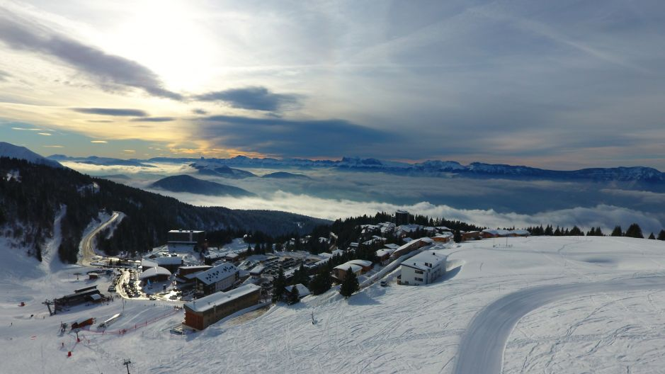

Bonjour🥖!! My Name is Elsa Hajjar Migoule. I was born and raised in Nice, France🏖️. I have always lived there before coming to Cergy, but it didn't prevent me from having a great international opening. As I've had the chance to visit many different places around the world throughout my vacations, it allowed me to discover new cultures and landscapes, Sicily and Dominican Republic being some of my favourite places, I have become curious and open-minded🤠. I'm currently living in Cergy, were I'm studying a degree in Business Administration at ESSEC Business School.
Discover Essec Business SchoolI'm currently a member of two associations in ESSEC. One of them is The POOL which consists of a sport association created to promote billard practice and competitions among the ESSEC student community. My role, as the head secretary, is mainly the administrative organization of events, of digital content to promote the association and events organized to promote Hispanic culture at ESSEC.
I'm also a member of a citizen/caricative association called ROTARACT. Here, I’m in charge of managing the Instagram and Facebook accounts and I create digital content to promote the association. Also, I help to contact sponsors, mainly for charitable purposes and to raise funds and awareness.
I enjoy traveling, learning about other countries, getting to know new people, etc. I believe that traveling is a more instructive experience than attending high school or college. When we journey, there's a chance we'll pick up a new language, experience new foods or aspects of another society, or even develop a better understanding of religion and spirituality.
Additionally, I believe that travel broadens the intellect. You come to understand that there are various ways to exist. Meeting individuals from other cultures in particular will make it clear that you don't share their perspective on the world.
Personally, I like to travel to balmy climates like Dominican Republic, Malte, Spain, Greece, and Italy. Nevertheless, I generally enjoy every location I go because I enjoy skiing, the mountain, and discovering new places and environments. For instance, a few weeks ago, my I traveled to Chamrousse with ESSEC. While there, I was constantly gazing out of the windows or while walking around and I couldn't believe how gorgeous the landscape was.
Chamrousse, FRANCE
I'm a very active and enthusiastic girl, so sports make part of my dialy life. I have done many sports throughout my whole life apart from tennis. These include horse riding, soccer, skiing, volleyball, dancing, swimming, etc. There's not a single sport so far, out of these, that I haven't enjoyed.